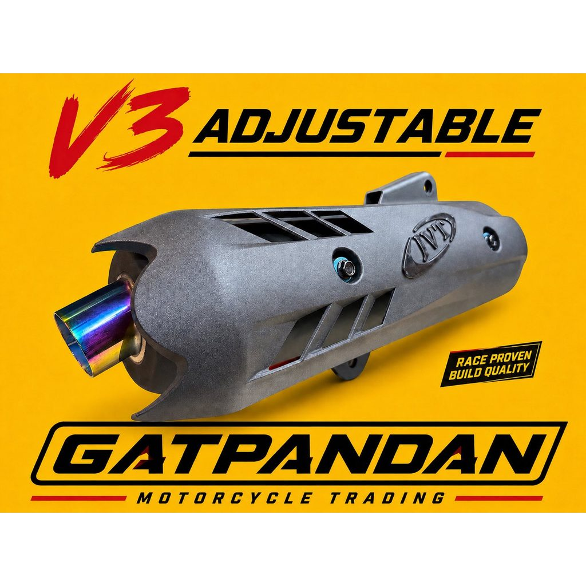
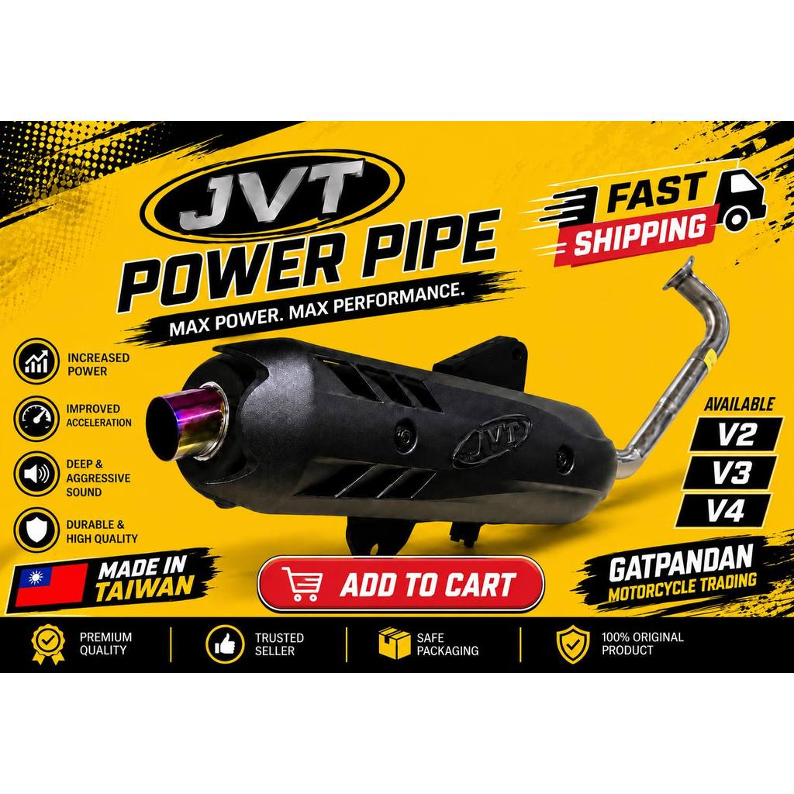
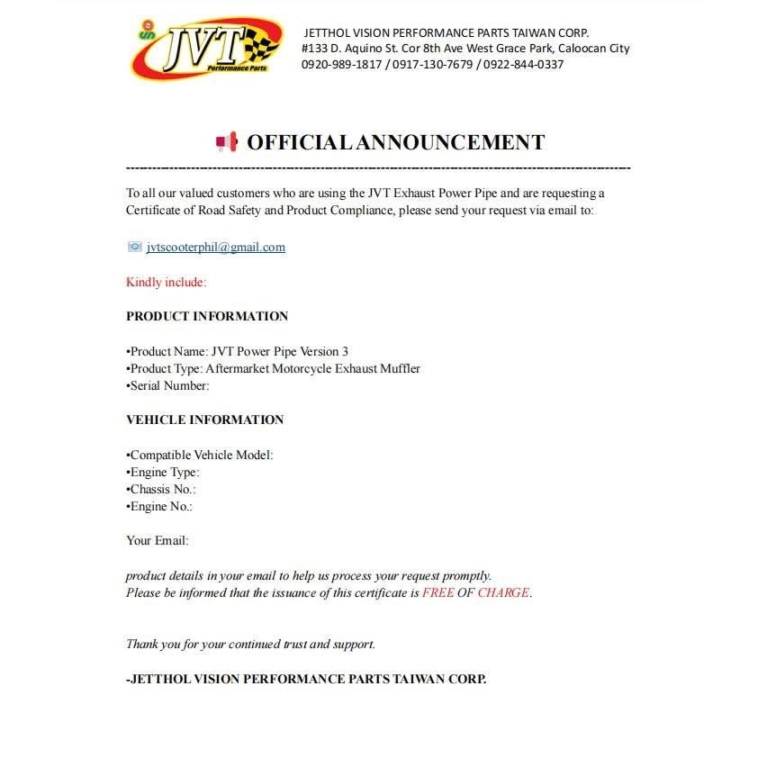

Bike parts · 29 September 2026
JVT exhaust power pipe.
The listing title names three options: V2.1 Silent Killer, V3 Adjustable, and V3 Stainless. The photos below are the seller’s pictures. Pick the variant that the page says fits your motorcycle.




Read the variant, not the poster
One poster on the listing prints V2, V3, and V4, plus lines about power and sound. Those lines are the seller’s advertisement. The product title you can order from is V2.1 Silent Killer, V3 Adjustable, or V3 Stainless. A pipe for the wrong model will not bolt up, even when the canister looks the same.
This catalog does not attach the pipe to every scooter button. The listing text does not name one motorcycle. Open the product and read the fitment on the variant you select.
Road use
An aftermarket muffler is not automatically approved for a public road. Local noise rules still apply. One photo is a notice from Jetthol Vision Performance Parts Taiwan Corp. about asking them for a compliance certificate. Use the contact printed on that photo. That notice is not an approval from Kurbada, and it is not proof the pipe is legal on your road.
A video of a JVT pipe
Kurbada did not film this. It is a YouTube short by rigsxxzz, titled “JVT V3 PIPE CONVERSION FROM nmax v1 to aerox v2”. The clip is about a V3 conversion, so it may not match the V2.1 Silent Killer or the stainless option.
More guides
Rusi Macho TC150 side cover · Beast tubeless tire · Smash handle bolts